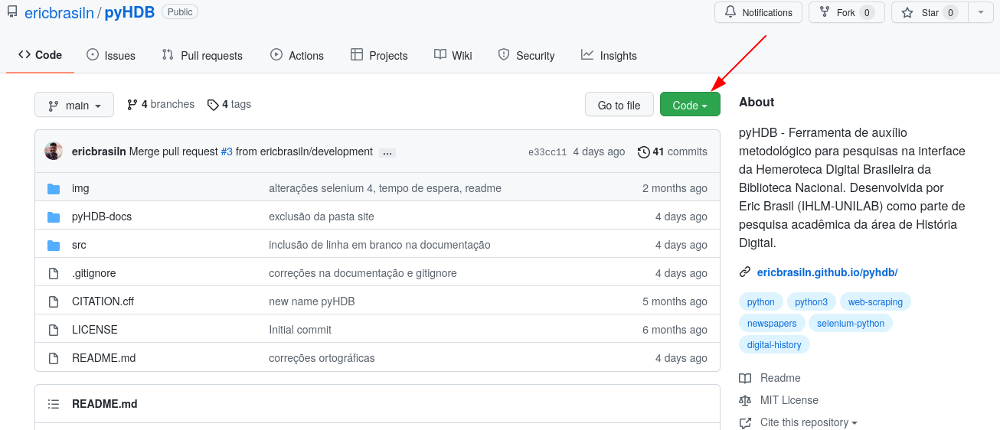
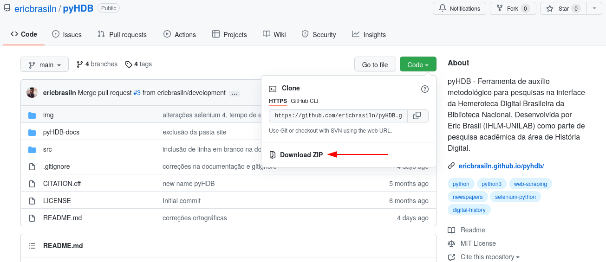

[EM ATUALIZAÇÃO] - Versão 2.0 em desenvolvimento
Bem-vindo à documentação da pyHDB - Ferramenta heurística para a Hemeroteca Digital Brasileira


 Ferramenta de auxílio metodológico para pesquisa na Hemeroteca Digital Brasileira da Biblioteca Nacional.
Ferramenta de auxílio metodológico para pesquisa na Hemeroteca Digital Brasileira da Biblioteca Nacional.
Desenvolvida por Eric Brasil como parte de pesquisa acadêmica da área de História Digital com participação direta de Gabriel Andrade.
Essa ferramenta não possui fins lucrativos nem pretende acessar dados sigilosos ou alterar informações nos servidores da instituição.
Tem como objetivo auxiliar pesquisadores e pesquisadoras no processo de documentação e registro preciso das etapas de pesquisa e garantir o rigor metodológico. Portanto, é uma ferramenta heurística digital.
Seu desenvolvimento está no âmbito das pesquisas realizadas no curso de História do IHLM/Unilab e do LABHDUFBA.
Os resultados da pesquisa estão publicados em artigo científico avaliado por pares na Revista História da Historiografia e pode ser acessado aqui1 e seu código e documentação estão disponíveis publicamente, com licença MIT.
Buscamos não sobrecarregar os servidores da Biblioteca Nacional e respeitar os termos de uso.
Instalação
Python
Essa ferramenta foi escrita em Python 3.11. Esta é uma linguagem de programação que te permite trabalhar rapidamente e integrar diferentes sistemas com maior eficiência.
Para executar o arquivo .py é preciso instalar o Python 3.11 em seu computador, criar um virtual enviroment e em seguida instalar as bibliotecas utilizadas na ferramentas.
Clique aqui para um tutorial de instalação do Python no Windows, clique aqui para Linux e clique aqui para Mac.
Após a instalação, você pode executar arquivos .py direto do prompt de comando do Windows ou pelo terminal do Linux, ou utilizar as diversas IDE disponíveis.
Para saber mais sobre a instalação e configuração do Python em vários sistemas operacionais, veja a lição Introdução e instalação do Python de William J. Turkel e Adam Crymble 2.
Além do Python, seu computador precisa ter o pip instalado, um programa para instalar pacotes de software. Nas versões mais recentes do Python, o pip já vem instalado. Para saber mais, veja a lição Instalação de Módulos Python com pip, de Fred Gibbs 3.
Bibliotecas e módulos
- urllib.requests
- Selenium
- webdriver.manager
- pandas
- wget
- undetected_chromedriver
- selenium_stealth
OBS 1: A ferramenta foi desenvolvida e testada no sistema operacional Linux, em distribuição baseada no Arch. Entretanto, ela foi projetada para funcionar em qualquer sistema operacional que suporte o Python 3.11.
OBS 2: A ferramenta utiliza padrões ANSI para imprimir na tela alguns textos coloridos. Esse padrão é suportado nos terminais Linux e neles foram testados. Para usuários Windows é importante destacar que o suporte às ANSI scape colors existe no PowerShell a partir da versão 7.2, conforme essa resposta no StackOverflow. Portanto, para que os detalhes coloridos da ferramenta sejam impressos corretamente na tela, usuários de Windows devem utilizar PowerShell 7.2 ou mais recentes ou outros emuladores de terminal que suportem cores ANSI. Para mais informações ver a página oficial do PowerShell e a página da Wikipédia sobre xterm, emulador de terminal para Windows.
OBS 3: É necessário possuir o navegador Chrome instalado, pois este será utilizado pelo Selenium para acessar o site da HDB.
Download da ferramenta pyHDB
Para baixar a ferramenta para seu computador, existem duas formas. Para ambos os casos, é necessário acessar o repositório do GitHub ericbrasiln/pyHDB e clicar no botão Code.

Baixar o arquivo compactado pyHDB.zip
Para baixar o arquivo pyHDB.zip, após clicar em Code, clique em Download ZIP e salve em seu computador.

Em seguida, descompacte o arquivo no local de sua preferência.
Clonar o repositório com Git ou criar um fork no GitHub
Para quem utiliza o sistema de controle de versões Git, basta clonar o repositório para seu computador, executando os comandos a partir da pasta em que deseja salvar o repositório.
git clone https://github.com/ericbrasiln/pyHDB.git
Quem utiliza o GitHub, pode também criar um fork do repositório.
Instalando requisitos
Após baixar ou clonar o repositório para seu computador, acesse a pasta através do terminal ou PowerShell, caso seja usuário Windows.
cd <caminho para pasta>/pyHDB/src
Para saber mais sobre os comandos básicos do PowerShell, veja a lição Introduction to the Windows Command Line with PowerShell, de Ted Dawson no The Programming Historian 4. Para o Terminal para Linux e MacOS, veja a lição Introduction to the Bash Command Line, de Ian Milligan and James Baker no The Programming Historian 5.
É necessário instalar os requisitos (módulos e bibliotecas). É recomendado criar um virtual enviroment (venv) para instalar os requisitos. Para criar um venv em sistemas baseados em Unix (Linux e MacOS), execute o comando abaixo:
$ python -m venv venv
$ source venv/bin/activate
Para criar um venv em Windows, execute o comando abaixo no PowerShell:
$ python -m venv venv
$ .\venv\Scripts\Activate.ps1
Após criar o venv e ativá-lo, instale os requisitos listados no arquivo requirements.txt.
Para isso, execute o comando abaixo:
$ pip install -r requirements.txt
Após a conclusão do processo, a ferramenta estará pronta para ser utilizada.
Usos
Para iniciar a ferramenta, é preciso executar o arquivo pyHDB.py usando Python, a partir da pasta pyHDB/src. Para isso, execute o comando abaixo, no terminal ou PowerShell, estando na pasta pyHDB/src.
$ python pyHDB.py
Ao executar o programa, o usuário verá as informações introdutórias da ferramentas.
Em seguida, o usuário deverá inserir os parâmetros de busca. Lembrando que nessa versão do programa, a busca inicial é estabelecida pela opção local.
1- Local
Orientações para busca:
- O termo deve ser idêntico às opções listadas na página da HDB;
- Esse parâmetro é case sensitive;
Digite o local de busca:
É possível incluir uma opção de recorte temporal em seguida.
2 - Período
Orientações para busca:
- O recorte deve ser escrito de forma idêntica às opções listadas na página da HDB;
- É possível buscar todos os periódicos digitando `Todos`
Digite o período de busca:
OBS 4: Lembrando que os parâmetros
LocalePeríododevem ser escritos de forma idêntica às opções listadas na página da HDB. Por Exemplo, se o usuários deseja buscar os periódicos existentes no Rio de Janeiro, deve colocarRJ. Se o usuário deseja buscar os periódicos existentes no Rio de Janeiro na década de 1910, deve colocar1910 - 1919, pois as opções de período existentes na HDB estão organizadas por décadas.
A busca será efetuada em todos os acervos existentes para essa configuração (3 - Periódicos: Todos), após a inclusão do termo da busca.
4 - Termo da busca
Orientações para busca:
- Coloque o termo entre aspas duplas para expressões exatas;
- Não use acentos ou caracteres especiais;
- É recomendado não utilizar mais do que três palavras.
Digite o termo de busca:
Em seguida, o usuário define os tipos de arquivos de saída: apenas csv ou csv e json.
5 - Formato de saída
1 - CSV (padrão)
2 - CSV e JSON
Escolha o formato [1/2]:
Por último, o usuário define se deseja baixar as imagens das páginas com ocorrências ou não.
6 - Download de imagens
1 - Baixar imagens (padrão);
2 - Coletar apenas metadados (sem imagens).
Escolha a opção [1/2]:
A partir dos parâmetros de busca definidos pelo usuário, o programa retorna todos os acervos dos jornais com alguma ocorrência, até o limite de 100 jornais (ou seja, a segunda página de resultados).
Opção de busca por acervo ou lista de acervos específicos
A ferramenta pyHDB permite a busca por acervos específicos, ou lista de acervos específicos. Para tanto é preciso executar o arquivo pyHDB_acervos.py.
O usuário deverá informar o número do acervo ou a lista de acervos que deseja pesquisar.
Essa opção foi desenvolvida para sanar erros no processo de raspagem que podem acontecer principalmente em buscas com milhares de ocorrências.
Se algum acervo não for raspado corretamente pela ferramenta principal pyHDB, o usuário poderá executar o arquivo pyHDB_acervos.py para raspagem de acervos específicos.
Resultados
Ao final do processo, a ferramenta criará arquivos csv e\ou json e relatórios em txt. Além disso, retornará automaticamente um csv e/ou json final mesclando os dados recém coletados com os dados já existentes (desde que a busca seja executada na mesma data).
O programa retorna os seguintes resultados:
-
Cria diretórios de armazenamento:
HDB/{termo da busca}/{data da busca}/ -
CSV: Cria um diretórioHDB/{termo da busca}/{data da busca}/CSVe, dentro dele, salva arquivo csv contendo os seguintes dados para cada ocorrência:Termo da busca, Data da Busca, Acervo, Ano, Edição, Página, Nome do arquivo, Link. -
JSON: Cria um diretórioHDB/{termo da busca}/{data da busca}/JSONe, dentro dele, salva arquivo json contendo os seguintes dados para cada ocorrência:Termo da busca, Data da Busca, Acervo, Ano, Edição, Página, Nome do arquivo, Link. -
RELATÓRIOS: Cria um diretórioHDB/{termo da busca}/{data da busca}/RELATÓRIOSe salva nele relatórios de busca para cada pesquisa. - GERAL: Com os dados gerais da pesquisa
O título do arquivo tem o seguinte padrão:
- Data e hora da busca - Local da busca - Período da busca - Periódico da busca: - Termo da busca - Lista de acervos com ocorrências (máx. de 100) e quantidade de ocorrências - Total de acervos com ocorrências (máx. de 100) - Informações adicionais: Total de páginas pesquisadas; Total de acervos pesquisados; Total de ocorrências e Frequência de ocorrências por página.GERAL_{termo da pesquisa}_{data e hora da busca}.txt - Acervo: Com os dados de cada acervo
O título do arquivo tem o seguinte padrão:
- Data e hora da busca - Termo da busca - Acervo - Total de ocorrências - Link da lista de resultadosrelatório_{nome do acervo}_{número do acervo}_{data e hora da busca}.txt - ERRO: registra acervos que não puderam ser raspados
O título do arquivo tem o seguinte padrão:
- Data e hora da busca - Termo da busca - Acervo com ocorrência que não pode ser acessadoERRO_{número do acervo}_{data e hora da busca}.txt - INFORMAÇÕES GERAIS: registra dados gerais relativo ao quantitativo de acervos e páginas pesquisadas na busca e a quantidade de ocorrências, assim como a frequência de ocorrências por página.
- Acervo
- Total de Páginas
- Total de Ocorrências
- Frequência de ocorrências X páginas.
O título do arquivo tem o seguinte padrão:
{infos_acervos}_{período}_{page01 ou 02}.csv ARQUIVOS_IMG: Cria um diretórioHDB/{termo da busca}/{data da busca}/ARQUIVOS_IMGe salva as imagens das páginas com ocorrências. O nome do arquivo é a combinação no número do acervo com o número geral da página. Ex:168319_02_12603.jpg
Estrutura de diretórios
HDB
├── {termo da busca}
│ ├── {data}
│ │ ├── CSV
│ │ ├── JSON
│ │ ├── RELATÓRIOS
│ │ ├── ARQUIVOS_IMG
│ │ └── .cache
Cache e retomada de buscas interrompidas
A ferramenta pyHDB cria um diretório .cache dentro da pasta HDB/{termo da busca}/{data da busca}/ para armazenar arquivos de cache que permitem a retomada de buscas interrompidas.
Assim, se a busca for interrompida por algum motivo, o usuário poderá retomar a busca executando novamente o arquivo pyHDB.py e utilizando os mesmos parâmetros de busca. A ferramenta identificará os arquivos de cache e retomará a busca a partir do ponto em que foi interrompida.
Lembrando que a interface gráfica da HDB não permite que a ferramenta salte diretamente para uma ocorrência específica. Portanto, a ferramenta precisará navegar por todas as páginas anteriores para chegar na página onde a busca foi interrompida.
Concluída a raspagem sem erros, o cache é convertido em CSV final e removido.
Saída JSON
Se o usuário escolher CSV + JSON, a ferramenta gera:
- Arquivos .jsonl (um objeto por linha, ideal para BigQuery, ElasticSearch etc.)
- Arquivos .json com metadados e registros agrupados.
Relatar erros e sugestões
Sendo a ferramenta pyHDB um scraper, um raspador de dados da internet, ela está profundamente ligada e dependente da estrutura e funcionamento do site da Hemeroteca Digital Brasileira da Biblioteca Nacional. Instabilidades no funcionamento do site da HDB afetam e prejudicam a raspagem de dados. Assim como, alterações em sua estrutura podem inviabilizar o funcionamento da ferramenta.
Portanto, erros de execução, de resultados, entre outros podem acontecer a qualquer momento. Para que a ferramenta possa continuar funcionando corretamente, o usuário deverá relatar os erros e enviar sugestões para a equipe de desenvolvimento da ferramenta.
Sugerimos que o usuário crie issues no GitHub da ferramenta pyHDB explicando da forma mais detalhada possível os problemas e qual sistema operacional está utilizando.
-
BRASIL, Eric. pyHDB - Ferramenta Heurística para a Hemeroteca Digital Brasileira: utilizando técnicas de web scraping para a pesquisa em História. História da Historiografia: International Journal of Theory and History of Historiography, Ouro Preto, v. 15, n. 40, p. 186–217, 2022. DOI: 10.15848/hh.v15i40.1904. ↩
-
William J. Turkel e Adam Crymble, "Introdução e instalação do Python", traduzido por Josir C. Gomes, Programming Historian em português 1 (2021), https://doi.org/10.46430/phpt0004. ↩
-
Fred Gibbs, "Instalação de Módulos Python com pip", traduzido por Felipe Lamarca, Programming Historian em português 1 (2021), https://doi.org/10.46430/phpt0018. ↩
-
Ted Dawson, "Introduction to the Windows Command Line with PowerShell," Programming Historian 5 (2016), https://doi.org/10.46430/phen0054. ↩
-
Ian Milligan and James Baker, "Introduction to the Bash Command Line," Programming Historian 3 (2014), https://doi.org/10.46430/phen0037. ↩